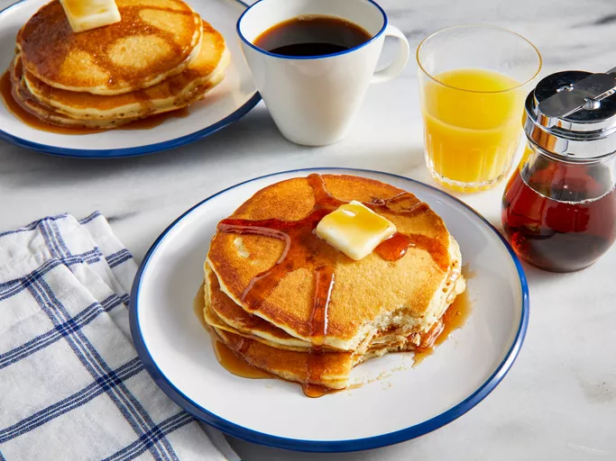

Pancakes Recipe

A delicious pancake recipe that will kickstart your day!
Pancakes are a simple breakfast dish that provide a balanced
nutrition that can help you charge energy for the whole day!
This is a complete guide on how to make delicious pancakes
that will make you look forward the morning hours of every day
Macros Distribution
- Calories: 197kcal
- Fat: 9g
- Carbohydrates: 23g
- Protein: 4g
Ingredients
- 1 1/4 cups Buttermilk
- 1/4 cup Vegetable Oil
- 1/2 tsp Vanilla Extract
- 1/4 cup White Sugar
- 1 1/4 cups All-purpose Flour
- 1 1/2 tsps Baking Powder
- 1 tsp Baking Soda
- Salt
- 1 whole Egg
- 1 tsp Lemon Juice
- 1 tbsp Butter or as needed
Procedures
- Mix buttermilk, vegetable oil and vanilla in a bowl; stir in sugar. Whisk in flour, baking powder,
baking soda, and salt combining the batter with just a few whisks to moisten. Leave the clumps.
- Whisk egg and lemon juice in a separate bowl; gently stir into the batter.
- Regrigerate the batter for at least 30 minutes to an hour.
- Heat a skillet or flat plan over medium heat and grease with butter. Pour 1/3 cup of batter per pancake
into the skillet or pan and cook until bubbles appear on the surface, about 2 minutes.
- Flip the pancakes and brown the other side for about 2 more minutes.
- Enjoy!